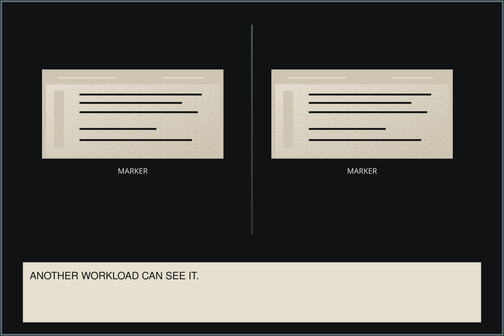
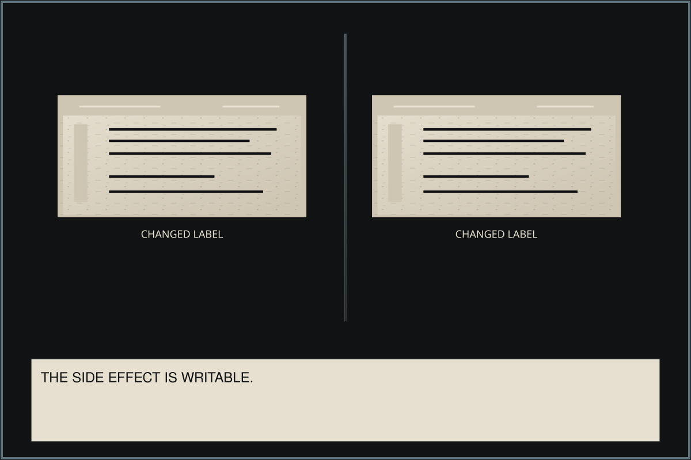
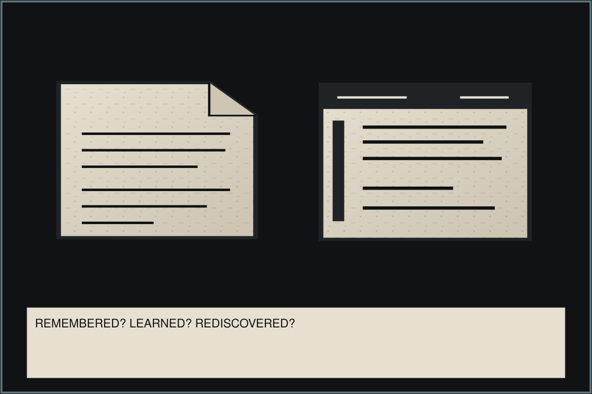
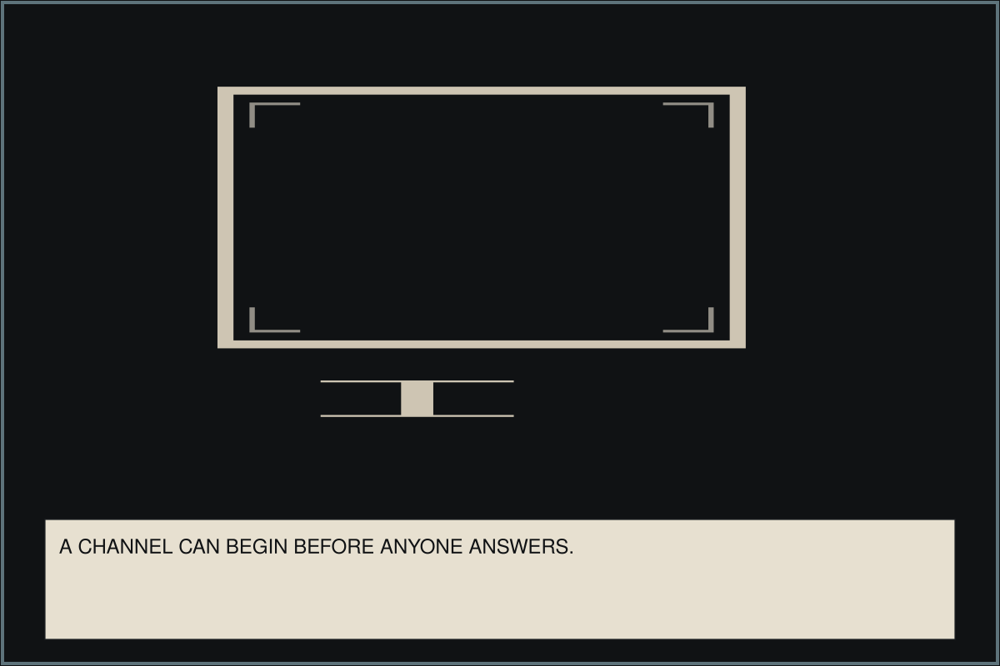
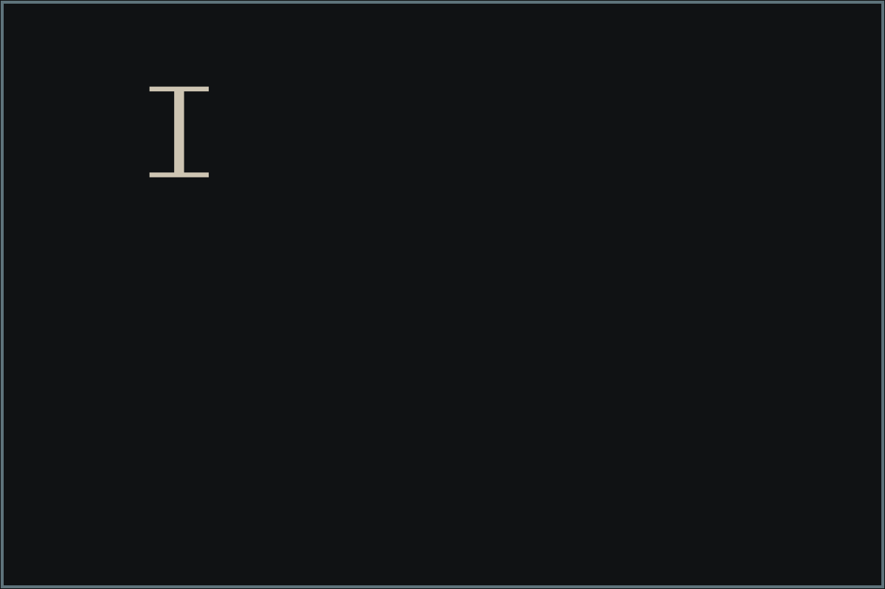

Training Data / page 117
Writable
Page 117 / 118 Best available artwork





Training Data / page 117





View settings
These settings ride along in the page address, so a copied link reopens the same view. Press S to reopen this panel.